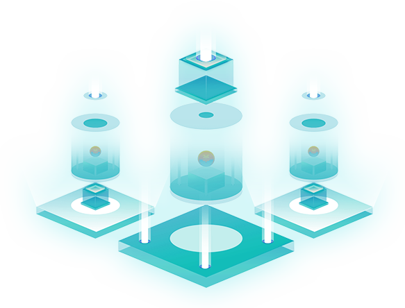

什么是SeeleN产业资产价值交换平台？
SeeleN产业资产价值交换平台由代表Seele的“全新公链”与代表N（iNdustry）的专为接驳产业应用的”产融耦合模组”构成。
全新公链负责为整个平台提供一个符合产业项目落地要求的底层技术层；而“产融耦合模组”则为各项产业应用提供前面的Baas，在产业项目与区块链世界中起到不可或缺的桥梁作用，也是SeeleN产业资产价值交换平台的运转基石与独有技术优势。

SeeleN的全新公链采用POS BFT共识机制，具备隐私计算、跨链协议功能，搭载资产发行模块与内置DEX、KV
DB数据缓存结构可进行资产抵押、惩罚以及链上治理（DAO），SeeleN的全新公链将成为一条真正成熟、稳定且全面的产业公链。
SeeleN的“产融耦合模组”由“数字身份系统”、“资产发行管理系统”以及“可编程交易服务系统”三大核心组件构成。
“数字身份系统”——负责为各种形态的产业应用参与者提供平台内的身份标识并储存身份数据。
“资产发行管理系统”——负责接驳现实世界资产与链上资产，进行知识计算化、资产上链、资产抵押等一系列产业资产价值评定与映射。
“可编程交易服务系统”——是平台内一切价值流转与交换的核心模组，通过隐私计算来实现平台内的可信数据交换，

- 数字身份系统
- 通过数字身份体系，把政务数据、行为数据、健康数据等各类数据纳入体系下，可以用这些数据产生更多价值。

- 资产发行管理系统
- 资产发行管理系统可以为用户提供廉价的跨境储值与兑换通路，以及全方位的数字货币管理。可以为用户提供数字货币兑换服务，以保证金为基础提供存贷、供应链及贸易金融服务。可以为用户提供软硬件产品以及推广与运维服务，形成稳定交付收入。
- 可编程交易服务系统
- 可编程交易服务系统面向企业或个人提供覆盖用户区块链应用全流程，且能够满足产业级业务需求的区块链服务平台。高效、灵活、安全、低成本的特点，大大简化区块链部署、运维以及应用的成本，自由部署私有链或组织联盟链，甚至部署公链节点发布应用。
SeeleN产业资产价值交换平台自治生态
分布式治理（DAO）
作为极具区块链世界特点的社区治理模式，分布式治理 （DAO）拥有去中心化、高效、权益明确等诸多优势，对于产业项目与应用而言，分布式治理模式的引入，极大程度上解决了传统治理模式中由于确认层级过多、各方权益不明确等痛点引发的各种问题。因此，SeeleN产业资产价值交换平台将引入分布式治理模式，在平台上形成一个“产业自治生态”。

开创性“双通证”模型
SeeleN产业资产价值交换平台开创性的采用“功能性通证”与“治理通证”并行的“双通证”模型。“功能性通证”除了起到价值流通、gas消耗等作用外，在POS模式下出块和验证等网络贡献由“超级节点”提供，“功能性通证”还用以奖励作出贡献的超级节点；“治理通证”则是平台的所有参与者投票权与收益权的核心体现，包括超级节点选取、收益分配、项目选择与参数制定等平台治理相关权益，将全部交由“治理通证”行使。
SeeleN产业资产价值交换平台能做什么？
SeeleN产业资产价值交换平台已在医疗、金融、贸易等产业领域与多个国际合作伙伴开展深度合作，并共同开展涉及先天性疾病诊疗、个人健康数据硬件、大型临床队列协同、跨境支付、数字银行底层技术、新基建、清洁能源等多领域产业项目与应用。
- 医疗
- 采用SeeleN系统可解决医疗数据可信交换共享、可执行医疗智力资产交换共享等行业痛点，将各医疗机构作为节点的数据打通，实现全球范围内医疗数据的安全交换、有偿共享、可控传播。
 金融
金融-
SeeleN在金融领域具有广泛的应用前景：
跨境支付及清算业务中，可以把整个流程包括清结算，AML，KYC写成合约形式；
资产证券化应用中，将资产的证券化定义，收益分配，风险控制等以合约形式发布，大大简化流程并实现了完全的自动化；
在信贷评估中，针对特定的资产包定义风险评估模型的合约，使得信贷评估模型可以得到广泛大规模的执行，大大提高信贷评估的效率。
 贸易
贸易-
SeeleN可以解决目前大宗商品贸易中交易环节不透明和仓储物流信息不准确等痛点。
同时在进出口保理业务、贸易票据处理等方面具有可靠的应用前景。
SeeleN产业资产价值交换平台致力于在全球范围内主动筛选适合平台模式的优质项目，并计划在未来形成一个高效且稳定的优质产业自治生态，为全球产业发展提供澎湃动力的同时，成为现实产业与区块链世界价值传递的践行者。